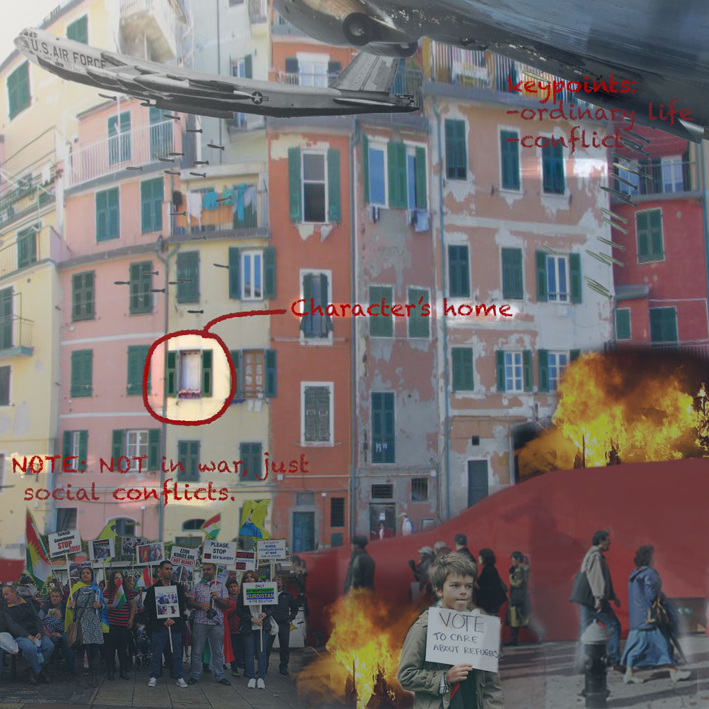

Here is where she lives
She lives surrounded by conflict, in a really mid third world country village.
The way I decided to create my character was in the middle of a conflicted country. She is
living an ordinary life in a country that is always in social conflict and economic struggle. My
sources of inspiration were all the films I’ve seen through these past months and my own
background as Venezuelan.
Raster image, created with photoshop.

Go back